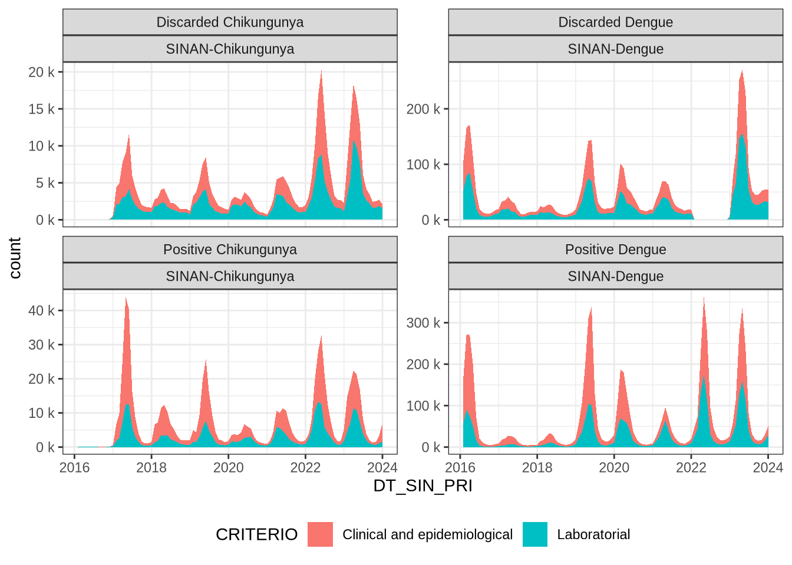

library(tidyverse)
library(arrow)
library(qs)
library(sessioninfo)
source("../../functions.R")Datasets
Packages
Data source
Datasets from SINAN Dengue and Chikungunya were previously downloaded from the Brazilian Health Ministry in DBC format, pre-processed (variables labels) and converted to the parquet format.
Dengue
- Data prior to 2016 does not have patient symptoms and clinical conditions
- Data from 2016 to 2021 is being considered
# Data sources
dengue_files_list <- c(
data_dir("dengue_data/parquets/dengue_2016.parquet"),
data_dir("dengue_data/parquets/dengue_2017.parquet"),
data_dir("dengue_data/parquets/dengue_2018.parquet"),
data_dir("dengue_data/parquets/dengue_2019.parquet"),
data_dir("dengue_data/parquets/dengue_2020.parquet"),
data_dir("dengue_data/parquets/dengue_2021.parquet")
)symp_cond_vars contains a list of variables regarding symptoms and clinical conditions.
grave_cases_vars contains a list of clinical symptoms specifically for grave cases.
other_vars contains names of other variables of interest.
case_vars <- c("ID_MN_RESI", "IDADEanos", "DT_SIN_PRI",
"CS_SEXO", "CS_GESTANT")
symp_cond_vars <- c("FEBRE", "MIALGIA", "CEFALEIA",
"EXANTEMA", "VOMITO", "NAUSEA",
"DOR_COSTAS", "CONJUNTVIT",
"ARTRITE", "ARTRALGIA", "PETEQUIA_N",
"LEUCOPENIA", "LACO", "DOR_RETRO",
"DIABETES", "HEMATOLOG", "HEPATOPAT",
"RENAL", "HIPERTENSA", "ACIDO_PEPT",
"AUTO_IMUNE")
# grave_cases_vars <- c("ALRM_HIPOT", "ALRM_PLAQ", "ALRM_VOM",
# "ALRM_SANG", "ALRM_HEMAT", "ALRM_ABDOM",
# "ALRM_LETAR", "ALRM_HEPAT", "ALRM_LIQ",
# "GRAV_PULSO", "GRAV_CONV", "GRAV_ENCH",
# "GRAV_INSUF", "GRAV_TAQUI", "GRAV_EXTRE",
# "GRAV_HIPOT", "GRAV_HEMAT", "GRAV_MELEN",
# "GRAV_METRO", "GRAV_SANG", "GRAV_AST",
# "GRAV_MIOC", "GRAV_CONSC", "GRAV_ORGAO",
# "MANI_HEMOR", "EPISTAXE", "GENGIVO",
# "METRO", "PETEQUIAS", "HEMATURA",
# "SANGRAM", "LACO_N", "PLASMATICO",
# "PLAQ_MENOR", "CON_FHD", "COMPLICA")We will read the datasets and select the variables on interest.
# Prepare data
dengue_full <- arrow::open_dataset(sources = dengue_files_list) |>
# Select variables
select(all_of(c(
"CLASSI_FIN", "CRITERIO",
case_vars,
symp_cond_vars
))) |>
collect()The full dengue dataset present the following dimensions
dim(dengue_full)[1] 8062135 28The variable CLASSI_FIN present the case’s diagnoses and `CRITERIO` present the method used to determine the diagnose.
dengue_full <- dengue_full |>
# Prepare variables
mutate(CLASSI_FIN = case_when(
str_detect(tolower(CLASSI_FIN), "dengue") ~ "Positive Dengue",
CLASSI_FIN == "Descartado" ~ "Discarded Dengue",
CLASSI_FIN == "Inconclusivo" ~ "Inconclusive",
.default = CLASSI_FIN
)) |>
mutate(CRITERIO = case_match(
CRITERIO,
"Clínico epidemiológico" ~ "Clinical and epidemiological",
"Laboratório" ~ "Laboratorial",
"Em investigação" ~ "Being investigated",
.default = CRITERIO
))Let’s see how many suspected cases falls on each condition.
dengue_full |>
group_by(CLASSI_FIN, CRITERIO) |>
summarise(count = n()) |>
ungroup() |>
gt::gt()`summarise()` has grouped output by 'CLASSI_FIN'. You can override using the
`.groups` argument.| CLASSI_FIN | CRITERIO | count |
|---|---|---|
| Discarded Dengue | Being investigated | 4626 |
| Discarded Dengue | Clinical and epidemiological | 1421773 |
| Discarded Dengue | Laboratorial | 1552381 |
| Discarded Dengue | NA | 24 |
| Inconclusive | Being investigated | 30589 |
| Inconclusive | Clinical and epidemiological | 11572 |
| Inconclusive | Laboratorial | 4763 |
| Inconclusive | NA | 994252 |
| Positive Dengue | Being investigated | 47498 |
| Positive Dengue | Clinical and epidemiological | 2546939 |
| Positive Dengue | Laboratorial | 1414954 |
| Positive Dengue | NA | 15 |
| NA | Being investigated | 1345 |
| NA | Clinical and epidemiological | 40 |
| NA | Laboratorial | 38 |
| NA | NA | 31326 |
We may recode some of the cases, filter out exceptions and add a variable to retain the original information system name.
dengue_full <- dengue_full|>
mutate(
CRITERIO = case_when(
CLASSI_FIN == "Inconclusive" & is.na(CRITERIO) ~ "Other reasons",
.default = CRITERIO
)
) |>
filter(!is.na(CRITERIO)) |>
filter(!is.na(CLASSI_FIN)) |>
filter(!(CLASSI_FIN == "Discarded Dengue" & CRITERIO == "Being investigated")) |>
filter(!(CLASSI_FIN == "Inconclusive" & CRITERIO == "Being investigated")) |>
filter(!(CLASSI_FIN == "Positive Dengue" & CRITERIO == "Being investigated")) |>
mutate(case_source = "SINAN-Dengue")dim(dengue_full)[1] 7946634 29dengue_full |>
group_by(CLASSI_FIN, CRITERIO) |>
summarise(count = n()) |>
ungroup() |>
gt::gt()`summarise()` has grouped output by 'CLASSI_FIN'. You can override using the
`.groups` argument.| CLASSI_FIN | CRITERIO | count |
|---|---|---|
| Discarded Dengue | Clinical and epidemiological | 1421773 |
| Discarded Dengue | Laboratorial | 1552381 |
| Inconclusive | Clinical and epidemiological | 11572 |
| Inconclusive | Laboratorial | 4763 |
| Inconclusive | Other reasons | 994252 |
| Positive Dengue | Clinical and epidemiological | 2546939 |
| Positive Dengue | Laboratorial | 1414954 |
qsave(x = dengue_full, file = "dengue_full.qs")Chikungunya
The same procedure executed on Dengue files is performed on Chikungunya reported suspected cases.
- Data prior to 2017 does not have patient symptoms and clinical conditions.
# Data sources
chik_files_list <- c(
data_dir("chik_data/parquets/chik_2017.parquet"),
data_dir("chik_data/parquets/chik_2018.parquet"),
data_dir("chik_data/parquets/chik_2019.parquet"),
data_dir("chik_data/parquets/chik_2020.parquet"),
data_dir("chik_data/parquets/chik_2021.parquet")
)# Prepare data
chik_full <- arrow::open_dataset(sources = chik_files_list) |>
# Select variables
select(all_of(c(
"CLASSI_FIN", "CRITERIO",
case_vars,
symp_cond_vars
))) |>
collect()dim(chik_full)[1] 776075 28chik_full <- chik_full |>
# Prepare variables
mutate(CLASSI_FIN = case_when(
str_detect(tolower(CLASSI_FIN), "chik") ~ "Positive Chikungunya",
CLASSI_FIN == "Descartado" ~ "Discarded Chikungunya",
CLASSI_FIN == "Inconclusivo" ~ "Inconclusive",
.default = CLASSI_FIN
)) |>
mutate(CRITERIO = case_match(
CRITERIO,
"Clínico epidemiológico" ~ "Clinical and epidemiological",
"Laboratório" ~ "Laboratorial",
"Em investigação" ~ "Being investigated",
.default = CRITERIO
))chik_full |>
group_by(CLASSI_FIN, CRITERIO) |>
summarise(count = n()) |>
ungroup() |>
gt::gt()`summarise()` has grouped output by 'CLASSI_FIN'. You can override using the
`.groups` argument.| CLASSI_FIN | CRITERIO | count |
|---|---|---|
| !� | � | 1 |
| Dengue | Clinical and epidemiological | 1 |
| Dengue clássico | Clinical and epidemiological | 19 |
| Dengue clássico | Laboratorial | 3 |
| Dengue com complicações | Clinical and epidemiological | 6 |
| Dengue com complicações | Laboratorial | 6 |
| Discarded Chikungunya | Being investigated | 324 |
| Discarded Chikungunya | Clinical and epidemiological | 96669 |
| Discarded Chikungunya | Laboratorial | 109833 |
| H0 | � | 1 |
| Inconclusive | Clinical and epidemiological | 1 |
| Inconclusive | Laboratorial | 2 |
| Inconclusive | NA | 15 |
| Positive Chikungunya | Being investigated | 9493 |
| Positive Chikungunya | Clinical and epidemiological | 293160 |
| Positive Chikungunya | Laboratorial | 155001 |
| �� | $ | 1 |
| NA | Being investigated | 4183 |
| NA | Clinical and epidemiological | 385 |
| NA | Laboratorial | 221 |
| NA | NA | 106750 |
chik_full <- chik_full|>
mutate(
CRITERIO = case_when(
CLASSI_FIN == "Inconclusive" & is.na(CRITERIO) ~ "Other reasons",
.default = CRITERIO
)
) |>
filter(CLASSI_FIN %in% c("Discarded Chikungunya", "Inconclusive", "Positive Chikungunya")) |>
filter(CRITERIO %in% c("Clinical and epidemiological", "Laboratorial", "Other reasons")) |>
mutate(case_source = "SINAN-Chikungunya")dim(chik_full)[1] 654681 29chik_full |>
group_by(CLASSI_FIN, CRITERIO) |>
summarise(count = n()) |>
ungroup() |>
gt::gt()`summarise()` has grouped output by 'CLASSI_FIN'. You can override using the
`.groups` argument.| CLASSI_FIN | CRITERIO | count |
|---|---|---|
| Discarded Chikungunya | Clinical and epidemiological | 96669 |
| Discarded Chikungunya | Laboratorial | 109833 |
| Inconclusive | Clinical and epidemiological | 1 |
| Inconclusive | Laboratorial | 2 |
| Inconclusive | Other reasons | 15 |
| Positive Chikungunya | Clinical and epidemiological | 293160 |
| Positive Chikungunya | Laboratorial | 155001 |
qsave(x = chik_full, file = "chik_full.qs")Join datasets
We will join both datasets, correct the date variable (DT_SIN_PRI) and remove invalid rows.
dcdata <- bind_rows(dengue_full, chik_full)dim(dcdata)[1] 8601315 29And remove no longer needed objects.
rm(dengue_full, chik_full, chik_files_list, dengue_files_list)
gc() used (Mb) gc trigger (Mb) max used (Mb)
Ncells 1539942 82.3 2484934 132.8 2484934 132.8
Vcells 252121716 1923.6 718247429 5479.8 718247429 5479.8dcdata |>
group_by(CLASSI_FIN, CRITERIO) |>
summarise(count = n()) |>
ungroup() |>
gt::gt()`summarise()` has grouped output by 'CLASSI_FIN'. You can override using the
`.groups` argument.| CLASSI_FIN | CRITERIO | count |
|---|---|---|
| Discarded Chikungunya | Clinical and epidemiological | 96669 |
| Discarded Chikungunya | Laboratorial | 109833 |
| Discarded Dengue | Clinical and epidemiological | 1421773 |
| Discarded Dengue | Laboratorial | 1552381 |
| Inconclusive | Clinical and epidemiological | 11573 |
| Inconclusive | Laboratorial | 4765 |
| Inconclusive | Other reasons | 994267 |
| Positive Chikungunya | Clinical and epidemiological | 293160 |
| Positive Chikungunya | Laboratorial | 155001 |
| Positive Dengue | Clinical and epidemiological | 2546939 |
| Positive Dengue | Laboratorial | 1414954 |
Data preparation
dcdata <- dcdata |>
mutate(DT_SIN_PRI = as_date(DT_SIN_PRI, format = "%Y-%m-%d")) |>
mutate(IDADEanos = as.numeric(IDADEanos)) |>
mutate(across(all_of(c(symp_cond_vars)), ~ . == "Sim")) |>
mutate(across(all_of(c(symp_cond_vars)), ~ replace_na(., 0))) |>
mutate(uf_res = substr(ID_MN_RESI, 0, 2)) |>
filter(year(DT_SIN_PRI) >= 2016 & year(DT_SIN_PRI) <= 2021) |>
na.omit()Warning: There was 1 warning in `mutate()`.
ℹ In argument: `DT_SIN_PRI = as_date(DT_SIN_PRI, format = "%Y-%m-%d")`.
Caused by warning:
! 2 failed to parse.Let’s see in time how the case classification and used criteria evolves.
dcdata |>
mutate(DT_SIN_PRI = ceiling_date(DT_SIN_PRI, "month")) |>
filter(CLASSI_FIN != "Inconclusive") |>
filter(CRITERIO != "Other reasons") |>
group_by(case_source, DT_SIN_PRI, CLASSI_FIN, CRITERIO) |>
summarise(count = n()) |>
ungroup() |>
ggplot(aes(x = DT_SIN_PRI, y = count, fill = CRITERIO)) +
geom_area(stat = "identity") +
scale_y_continuous(labels = scales::unit_format(
unit = "k",
scale = 1e-3,
accuracy = 1)
) +
facet_wrap(~CLASSI_FIN + case_source, scales = "free_y") +
theme_bw() +
theme(legend.position = "bottom", legend.direction = "horizontal")`summarise()` has grouped output by 'case_source', 'DT_SIN_PRI', 'CLASSI_FIN'.
You can override using the `.groups` argument.
Data removal
Caution
Only for tests.
dcdata <- slice_sample(.data = dcdata, n = 500000)qsave(x = dcdata, file = "dcdata.qs")Reference dataset
The reference dataset will contain only suspected cases that were assessed diagnosed by laboratory exams, to train and test a classification model. Cases with inconclusive classification will be discarded.
dc_ref <- dcdata |>
filter(CRITERIO == "Laboratorial") |>
filter(CLASSI_FIN != "Inconclusive")dim(dc_ref)[1] 187355 30dc_ref |>
group_by(CLASSI_FIN, CRITERIO) |>
summarise(count = n()) |>
ungroup() |>
gt::gt()`summarise()` has grouped output by 'CLASSI_FIN'. You can override using the
`.groups` argument.| CLASSI_FIN | CRITERIO | count |
|---|---|---|
| Discarded Chikungunya | Laboratorial | 6356 |
| Discarded Dengue | Laboratorial | 89537 |
| Positive Chikungunya | Laboratorial | 9118 |
| Positive Dengue | Laboratorial | 82344 |
qsave(x = dc_ref, file = "dc_ref.qs")Also, a simplified version is created, aggregating the classification not considering the specific disease, with a more balanced dataset.
dc_ref_simp <- dc_ref |>
mutate(CLASSI_FIN = case_match(
CLASSI_FIN,
"Discarded Chikungunya" ~ "Negative",
"Discarded Dengue" ~ "Negative",
"Positive Dengue" ~ "Positive",
"Positive Chikungunya" ~ "Positive"
))dc_ref_simp |>
group_by(CLASSI_FIN, CRITERIO) |>
summarise(count = n()) |>
ungroup() |>
gt::gt()`summarise()` has grouped output by 'CLASSI_FIN'. You can override using the
`.groups` argument.| CLASSI_FIN | CRITERIO | count |
|---|---|---|
| Negative | Laboratorial | 95893 |
| Positive | Laboratorial | 91462 |
qsave(x = dc_ref_simp, file = "dc_ref_simp.qs")Clinical dataset
On this dataset, we will only include the cases that were classified by clinical and epidemiological criteria. Inconclusive cases will are discarded.
dc_cli <- dcdata |>
filter(CRITERIO == "Clinical and epidemiological") |>
filter(CLASSI_FIN != "Inconclusive")dim(dc_cli)[1] 253896 30dc_cli |>
group_by(CLASSI_FIN, CRITERIO) |>
summarise(count = n()) |>
ungroup() |>
gt::gt()`summarise()` has grouped output by 'CLASSI_FIN'. You can override using the
`.groups` argument.| CLASSI_FIN | CRITERIO | count |
|---|---|---|
| Discarded Chikungunya | Clinical and epidemiological | 5671 |
| Discarded Dengue | Clinical and epidemiological | 81000 |
| Positive Chikungunya | Clinical and epidemiological | 17407 |
| Positive Dengue | Clinical and epidemiological | 149818 |
Also, a simplified version of this dataset is created.
dc_cli_simp <- dc_cli |>
mutate(CLASSI_FIN = case_match(
CLASSI_FIN,
"Discarded Chikungunya" ~ "Negative",
"Discarded Dengue" ~ "Negative",
"Positive Dengue" ~ "Positive",
"Positive Chikungunya" ~ "Positive"
))dim(dc_cli_simp)[1] 253896 30dc_cli_simp |>
group_by(CLASSI_FIN, CRITERIO) |>
summarise(count = n()) |>
ungroup() |>
gt::gt()`summarise()` has grouped output by 'CLASSI_FIN'. You can override using the
`.groups` argument.| CLASSI_FIN | CRITERIO | count |
|---|---|---|
| Negative | Clinical and epidemiological | 86671 |
| Positive | Clinical and epidemiological | 167225 |
qsave(x = dc_cli_simp, file = "dc_cli_simp.qs")The joined data can be remove on this stage.
rm(dcdata)
gc() used (Mb) gc trigger (Mb) max used (Mb)
Ncells 1902942 101.7 3772915 201.5 3609889 192.8
Vcells 12618867 96.3 459678356 3507.1 718247429 5479.8Session info
session_info()─ Session info ───────────────────────────────────────────────────────────────
setting value
version R version 4.3.2 (2023-10-31)
os CentOS Linux 7 (Core)
system x86_64, linux-gnu
ui X11
language (EN)
collate pt_BR.UTF-8
ctype pt_BR.UTF-8
tz America/Sao_Paulo
date 2024-02-14
pandoc 3.1.1 @ /home/raphaelfs/miniconda3/envs/quarto/bin/ (via rmarkdown)
─ Packages ───────────────────────────────────────────────────────────────────
package * version date (UTC) lib source
arrow * 14.0.1 2023-11-14 [2] local
assertthat 0.2.1 2019-03-21 [1] CRAN (R 4.2.2)
bit 4.0.5 2022-11-15 [1] CRAN (R 4.2.2)
bit64 4.0.5 2020-08-30 [1] CRAN (R 4.2.2)
cli 3.6.1 2023-03-23 [1] CRAN (R 4.2.0)
colorspace 2.1-0 2023-01-23 [1] CRAN (R 4.2.2)
digest 0.6.31 2022-12-11 [1] CRAN (R 4.2.2)
dplyr * 1.1.2 2023-04-20 [1] CRAN (R 4.2.0)
evaluate 0.21 2023-05-05 [1] CRAN (R 4.2.0)
fansi 1.0.4 2023-01-22 [1] CRAN (R 4.2.2)
farver 2.1.1 2022-07-06 [1] CRAN (R 4.2.2)
fastmap 1.1.1 2023-02-24 [1] CRAN (R 4.2.2)
forcats * 1.0.0 2023-01-29 [1] CRAN (R 4.2.2)
generics 0.1.3 2022-07-05 [1] CRAN (R 4.2.2)
ggplot2 * 3.4.2 2023-04-03 [1] CRAN (R 4.2.0)
glue 1.6.2 2022-02-24 [1] CRAN (R 4.2.2)
gt 0.9.0 2023-03-31 [1] CRAN (R 4.2.0)
gtable 0.3.3 2023-03-21 [1] CRAN (R 4.2.0)
hms 1.1.3 2023-03-21 [1] CRAN (R 4.2.0)
htmltools 0.5.5 2023-03-23 [1] CRAN (R 4.2.0)
htmlwidgets 1.6.2 2023-03-17 [1] CRAN (R 4.2.0)
jsonlite 1.8.5 2023-06-05 [1] CRAN (R 4.2.0)
knitr 1.43 2023-05-25 [1] CRAN (R 4.2.0)
labeling 0.4.2 2020-10-20 [1] CRAN (R 4.2.2)
lifecycle 1.0.3 2022-10-07 [1] CRAN (R 4.2.2)
lubridate * 1.9.2 2023-02-10 [1] CRAN (R 4.2.2)
magrittr 2.0.3 2022-03-30 [1] CRAN (R 4.2.2)
munsell 0.5.0 2018-06-12 [1] CRAN (R 4.2.2)
pillar 1.9.0 2023-03-22 [1] CRAN (R 4.2.0)
pkgconfig 2.0.3 2019-09-22 [1] CRAN (R 4.2.2)
purrr * 1.0.1 2023-01-10 [1] CRAN (R 4.2.2)
qs * 0.25.5 2023-02-22 [1] CRAN (R 4.2.3)
R6 2.5.1 2021-08-19 [1] CRAN (R 4.2.2)
RApiSerialize 0.1.2 2022-08-25 [1] CRAN (R 4.2.3)
Rcpp 1.0.10 2023-01-22 [1] CRAN (R 4.2.2)
RcppParallel 5.1.7 2023-02-27 [1] CRAN (R 4.2.2)
readr * 2.1.4 2023-02-10 [1] CRAN (R 4.2.2)
rlang 1.1.1 2023-04-28 [1] CRAN (R 4.2.0)
rmarkdown 2.22 2023-06-01 [1] CRAN (R 4.2.0)
rstudioapi 0.14 2022-08-22 [1] CRAN (R 4.2.2)
sass 0.4.6 2023-05-03 [1] CRAN (R 4.2.0)
scales 1.2.1 2022-08-20 [1] CRAN (R 4.2.2)
sessioninfo * 1.2.2 2021-12-06 [1] CRAN (R 4.2.1)
stringfish 0.15.8 2023-05-30 [1] CRAN (R 4.2.3)
stringi 1.7.12 2023-01-11 [1] CRAN (R 4.2.2)
stringr * 1.5.0 2022-12-02 [1] CRAN (R 4.2.2)
tibble * 3.2.1 2023-03-20 [1] CRAN (R 4.2.0)
tidyr * 1.3.0 2023-01-24 [1] CRAN (R 4.2.2)
tidyselect 1.2.0 2022-10-10 [1] CRAN (R 4.2.2)
tidyverse * 2.0.0 2023-02-22 [2] CRAN (R 4.3.0)
timechange 0.2.0 2023-01-11 [1] CRAN (R 4.2.1)
tzdb 0.4.0 2023-05-12 [1] CRAN (R 4.2.0)
utf8 1.2.3 2023-01-31 [1] CRAN (R 4.2.2)
vctrs 0.6.3 2023-06-14 [1] CRAN (R 4.2.3)
withr 2.5.0 2022-03-03 [1] CRAN (R 4.2.2)
xfun 0.39 2023-04-20 [1] CRAN (R 4.2.0)
xml2 1.3.4 2023-04-27 [1] CRAN (R 4.2.0)
yaml 2.3.7 2023-01-23 [1] CRAN (R 4.2.2)
[1] /home/raphaelfs/rlibs
[2] /home/raphaelfs/miniconda3/envs/quarto/lib/R/library
──────────────────────────────────────────────────────────────────────────────